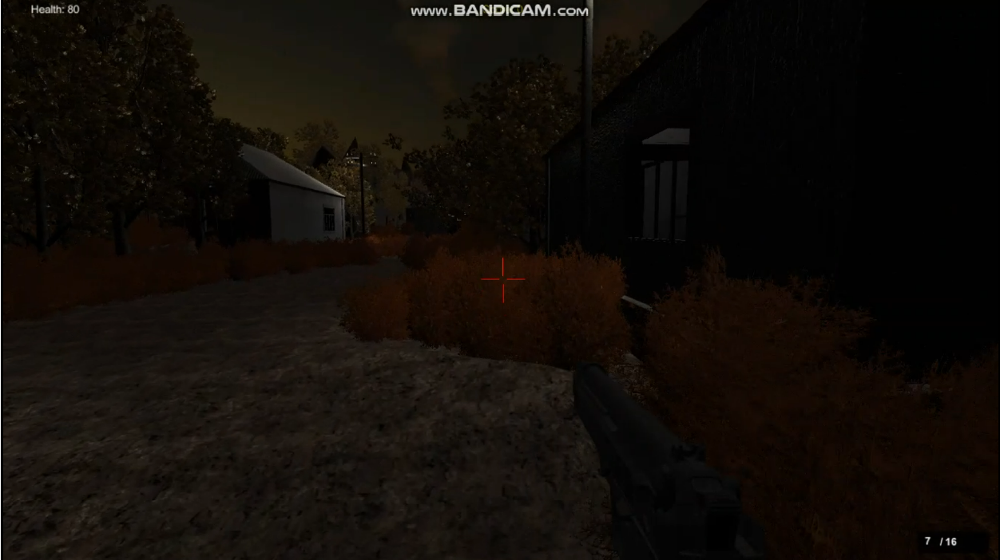
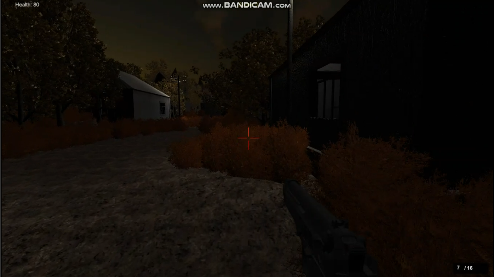

-
1. Salesforce + Streamlit + GPT

Overview
- Leveraging Salesforce as the data source, and Streamlit for a user-friendly experience.
- Key Focus: Permission Analysis, Data Export, ChatBot and Beyond.
- Dashboards showcase permission set usage, significance, territory modal, object limits, and enabled permissions.
- Export Salesforce query data and visualize it with dynamic charts.
- Tools used : Python, Salesforce, Streamlit, OpenAI API
- Read my article here.
- Github repository here.
-
2. First Person Perspective Survival Game
Overview
- Developed a basic yet functional first-person perspective game.
- Gained in-depth knowledge of game mechanics and the interconnectedness of game objects.
- Strengthened understanding of the fundamental principles underlying game development.
- Tools used : C#, Unity 3D
 
